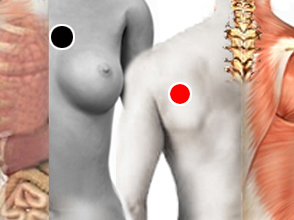

Mitomanía
Par
corazón - escápula

Generalidades:
Mitomanía, también conocida como mentira patológica o pseudología fantástica.
Las personas mitómanas sufren de una compulsión que les inclina a inventar constantemente relatos fantásticos o simplemente falsos. Si bien es sabido que todos mentimos frecuentemente "pequeñas mentiritas", los mitómanos no pueden dejar de mentir. No se trata de psicóticos que sufran de delirios o alucinaciones, ya que están plenamente conscientes de la falsedad de sus discursos, sin embargo dificilmente aceptarán que mienten.
Muchos de estos relatos tienen bastante lógica y en su mayoría se basan en hechos reales solo que exagerados o alterados de alguna manera. Los mitomanos pocas veces buscan sacar ventaja de sus relatos falsos, pero en muchos casos los utilizan para lucir más pudientes, intrépidos, altruistas, intelectuales, interesantes... o de alguna forma llamar la atención.
¿Qué hay detrás de la mitomanía?
La mitomanía por lo regular va acompañada de algún otro trastorno de la personalidad, que puede ser desde baja autoestima y necesidad de aceptación hasta personalidad disociada.
El mitómano se puede sentir más inteligente y con cierto poder por el hecho de engañar a los demás. También, en el fondo, puede haber un gran rechazo de sí mismo o de alguna circunstancia familiar o de su niñez, situación que busca ocultar con un velo de fantasías y mentira.
Algunos estudios sugieren que el cerebro de los mitómanos tiene un 26% más de materia blanca en el lóbulo prefrontal, lo que les da mayor capacidad para asociar ideas.
Consecuencias:
Como todo trastorno obsesivo compulsivo, la mitomanía puede afectar severamente la vida de la persona, desde problemas de pareja, familiares, integración social hasta conflictos laborales y legales.
Hasta el momento la psicoterapia es el mejor tratamiento.
Temas relacionados: